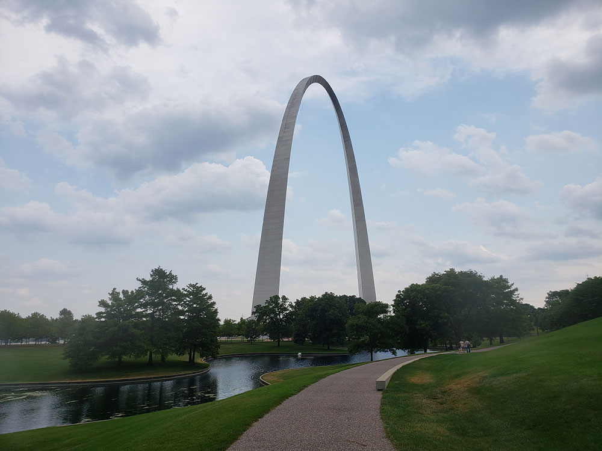
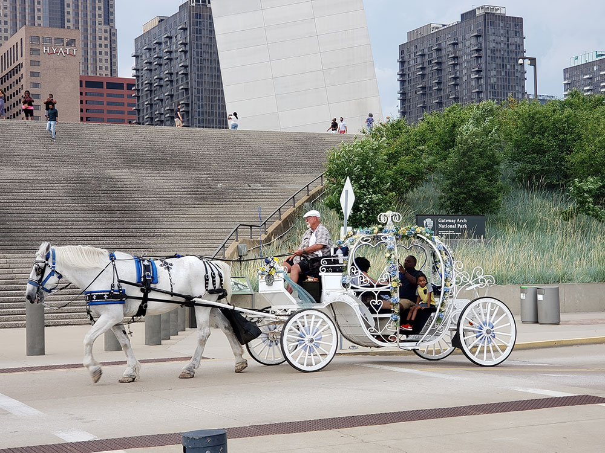
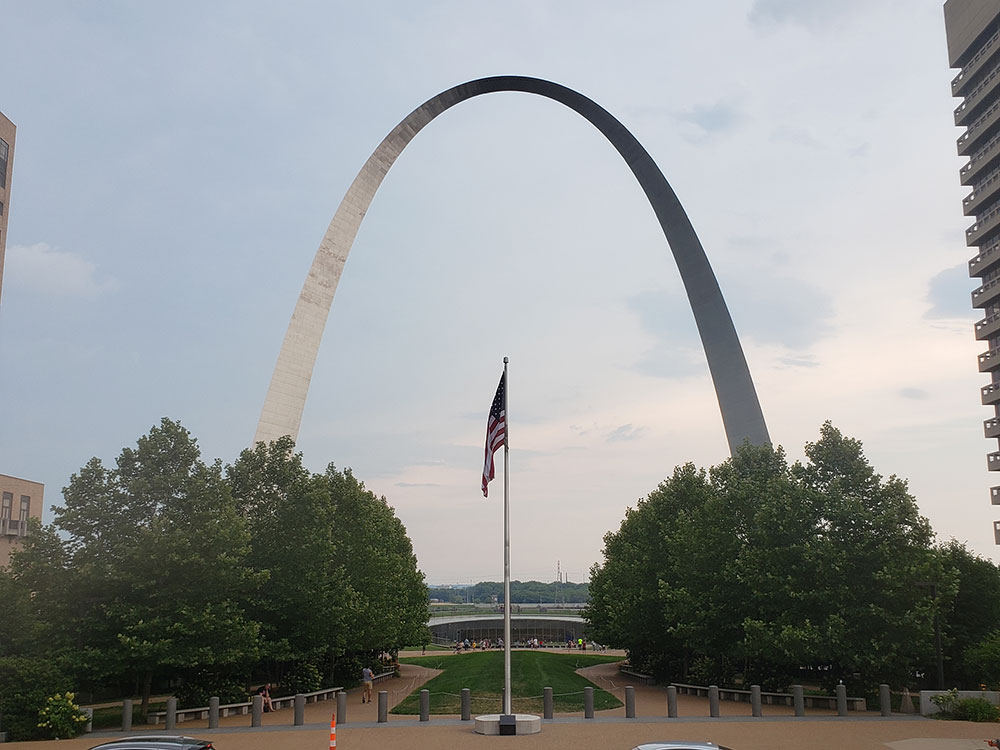
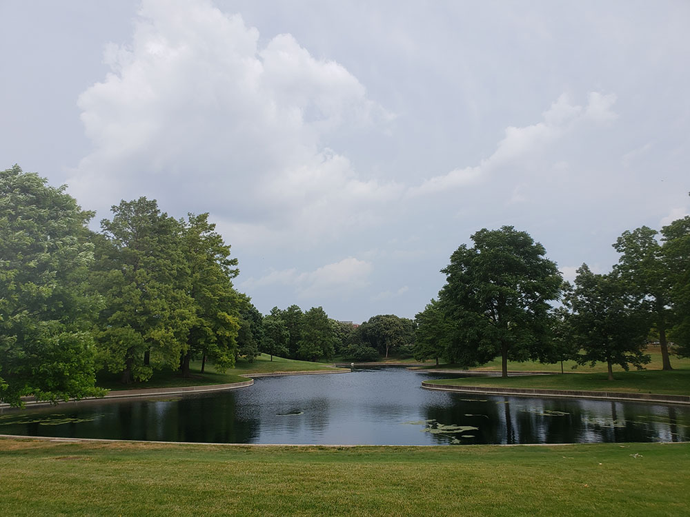
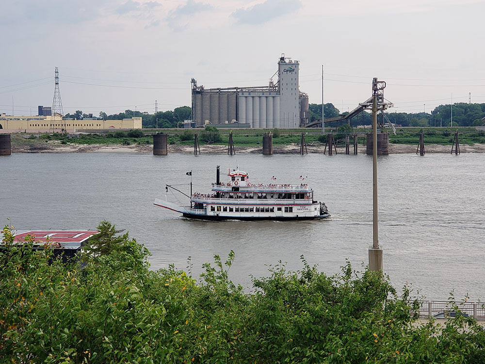
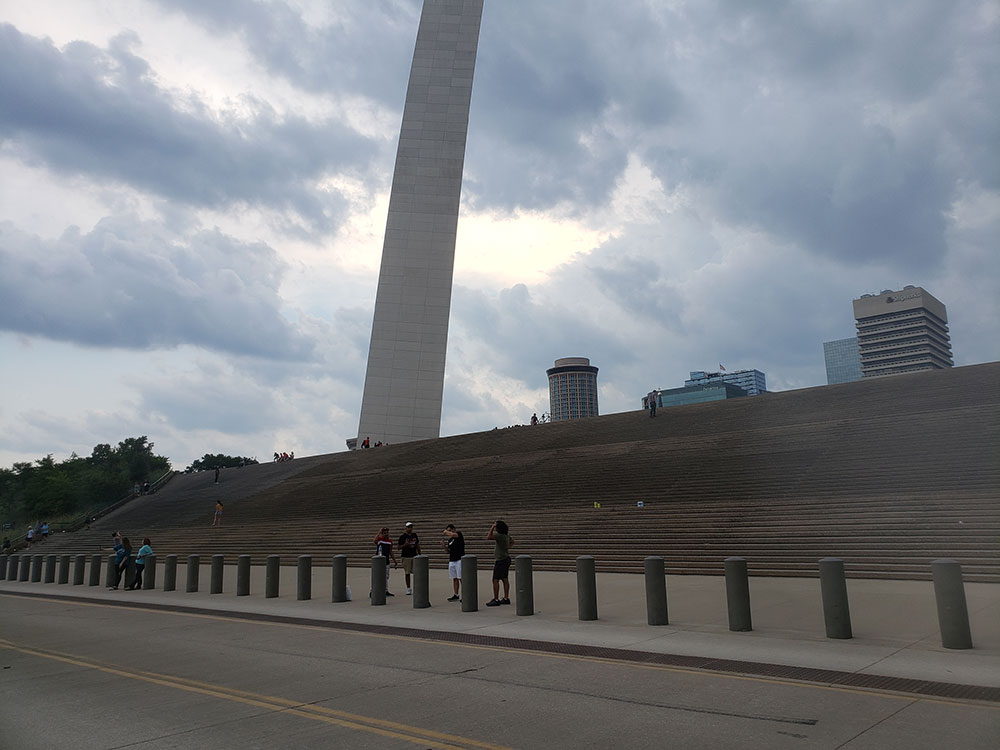

.jpg){kind=link}
National park consists of the Gateway Arch, a steel catenary arch that has become the definitive icon of St. Louis; a 91-acre (36.8 ha) park; the Old Courthouse where the Dred Scott case originated; and the 140,000 sq ft (13,000 m2) museum
General Information
Gateway Arch visitor center and tram hours vary by season
Tram rides, riverboat cruises, and special exhibits require paid tickets
How to Get There
From St. Louis (1 mi): Take I-44 east into downtown and follow signs toward Memorial Drive and the riverfront to reach the park entrance and Gateway Arch grounds.
Overview
Gateway Arch National Park preserves the riverfront site in downtown St. Louis, Missouri, where the city was founded, and commemorates the Louisiana Purchase, the westward expansion of the United States, and the Dred Scott case over slavery. At just 91 acres, it is the smallest national park in the country. Its centerpiece is the Gateway Arch, a gleaming stainless-steel arch 630 feet tall, the tallest human-made monument in the United States and the tallest arch in the world. Designed by architect Eero Saarinen, it rises above the Mississippi River as a symbol of St. Louis as the "Gateway to the West."
The site was set aside as the Jefferson National Expansion Memorial in 1935, the Arch was completed in 1965, and Congress redesignated the memorial as a national park in 2018. People visit to ride the tram to the top of the Arch for sweeping views over the city and river, to explore the museum beneath it, to tour the Old Courthouse where the Dred Scott case was first heard, and to stroll the landscaped grounds. It is also a convenient stop for travelers on the way across the Midwest.
Park Sections
The park is compact and has three main parts, all within a short walk of each other in downtown St. Louis. The Arch and its grounds sit along the Mississippi riverfront, with the Museum at the Gateway Arch and the tram entrance located underground beneath the Arch. West of the grounds, across Memorial Drive, the Old Courthouse stands at the head of a green park connecting to the rest of downtown. The riverfront, or levee, along the Mississippi River offers walking paths and views of the Eads Bridge and passing barges. You can see the whole park in a few hours.
Sightseeing and Exploring the Park
The park has no scenic drive, but the walk around the Arch grounds is the main sightseeing activity. Wide paths wind through landscaped gardens, ponds, and rows of trees designed by landscape architect Dan Kiley, and they give changing views of the Arch against the downtown skyline. The tram ride to the observation deck, in small capsules that travel inside the legs of the Arch, takes about four minutes up and offers views of up to 30 miles on a clear day. The Old Courthouse, with its cast-iron dome, houses galleries on westward expansion and the Dred Scott case. Riverboat cruises on the Mississippi leave from the levee below the Arch.
Hiking
Gateway Arch is not a hiking park, but it offers easy walks on paved and accessible paths. A loop around the Arch grounds is about 1 to 1.5 miles, and the paths connect to the riverfront promenade along the levee, to Kiener Plaza and the Old Courthouse, and to the Mississippi River Trail for longer walks and rides. The terrain is flat, with a few gentle slopes and stairs between levels. No trails are strenuous, and there are no backcountry routes, so the park suits visitors of all ages and abilities.
Other Activities
The most popular activity is the Arch tram ride, which should be reserved ahead online, especially in summer. The Museum at the Gateway Arch, which opened in 2018, tells the story of westward expansion and the development of St. Louis, and a documentary film is shown in the theater. Riverboat cruises, which run seasonally, give a different view of the Arch and the city. Rangers lead tours and talks at the Old Courthouse. The park is surrounded by other attractions, including City Museum, Forest Park, the Saint Louis Zoo, and Busch Stadium. There are no cave tours or outfitters.
Flora and Wildlife
Gateway Arch is a designed urban landscape and is not known for specific plants or wildlife. The grounds feature more than a thousand trees, including London planetrees and ash, as well as shrubs, flower beds, and lawns, all planted to frame views of the Arch. The Mississippi River attracts birds, including gulls, herons, pelicans, and bald eagles in winter, and peregrine falcons have nested on nearby tall buildings. Squirrels and rabbits are the most common mammals. There are no wildlife tours, but birders may see migrants along the river in spring and fall.
Access
The park is on the west bank of the Mississippi River in downtown St. Louis and is easy to reach by car from I-44, I-55, I-64, and I-70. Lambert St. Louis International Airport is about 15 miles northwest, a 20-minute drive, and the MetroLink light rail connects the airport to downtown stations, with a stop a short walk from the park. The Amtrak station is about 1.5 miles away. Parking is available in garages and lots near the park, and the Arch grounds can be reached on foot from many downtown hotels. The riverfront also connects to the Illinois side by the Eads Bridge.
Seasons
The park is open all year. Summer is hot and humid, so visit early or late in the day, though this is the busiest season and tram tickets sell out. Spring and fall are the most comfortable, with mild weather and colorful trees on the grounds. Winter is cold and gray with occasional snow, but crowds are small and tram waits are short. Flooding on the Mississippi can sometimes close the levee paths and parts of the riverfront in spring. Tram and museum hours change by season, so check the National Park Service website.
Camping and Lodging
There is no lodging or camping in the park. Downtown St. Louis has many hotels within walking distance of the Arch, including the Hyatt Regency St. Louis at The Arch, the Drury Plaza Hotel at the Arch, the Hilton St. Louis at the Ballpark, and the historic Union Station Hotel, as well as chain hotels in the Central West End and Clayton. For camping, Dr. Edmund A. Babler Memorial State Park, about 30 minutes west, and several private campgrounds on the Missouri and Illinois sides of the river are within an hour of the city.
Visitor Centers
The Museum at the Gateway Arch beneath the Arch serves as the park's main visitor center. It has exhibits, a theater, a museum store, ticket desks for the Arch tram, and the entrance to the tram station, and security screening is required to enter. The Old Courthouse also has a visitor desk with exhibits and information, and rangers are available at both sites. Hours vary by season, and the tram usually has longer hours in summer, so check the National Park Service website before you go.
This article uses material from the Wikipedia article "Gateway Arch National Park", which is released under the Creative Commons Attribution-Share-Alike License 3.0. Additional information comes from the National Park Service Gateway Arch National Park website.
Featured Sections

Gateway Arch
630-foot (192 m) monument in St. Louis, Missouri, clad in stainless steel, is the world's tallest arch, the tallest man-made monument in the Western Hemisphere, and Missouri's tallest accessible building
Jeff P from Berkeley, CA, USA, CC BY 2.0, via Wikimedia Commons; Image Size Adjusted
.jpg){kind=link}
Old Courthouse
Former state and federal courthouse where the Dred Scott case originated, now part of Gateway Arch National Park for historical exhibits and events





